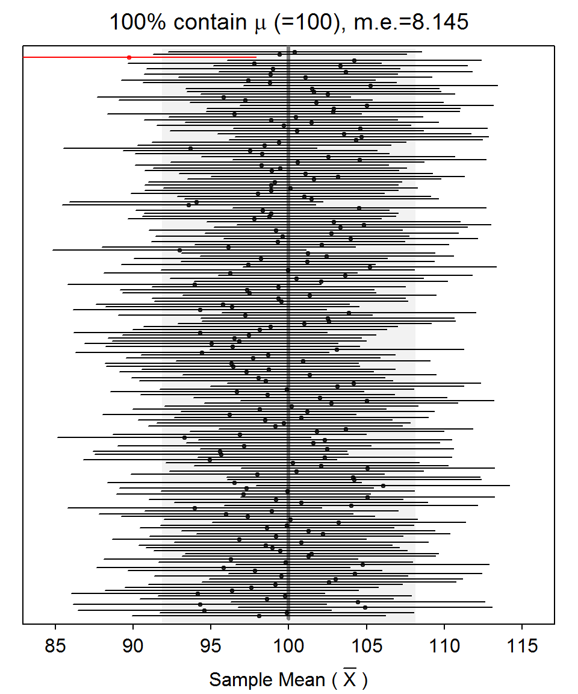

Understanding the Concept of Confidence Intervals
 The concept of confidence in a confidence interval (CI) is subtle because it depends on thinking about taking all possible samples from a known population distribution, computing the CI for each sample, and then determining if the CI captures the parameter or not. This thought-process is complicated by the fact that the parameter is unknown and taking all possible samples is impossible (not to mention tedious). The
The concept of confidence in a confidence interval (CI) is subtle because it depends on thinking about taking all possible samples from a known population distribution, computing the CI for each sample, and then determining if the CI captures the parameter or not. This thought-process is complicated by the fact that the parameter is unknown and taking all possible samples is impossible (not to mention tedious). The ciSim() function (with no arguments) from NCStats provides an efficient method to simulate this process and provide a graphical result of the CIs relative to the parameter from many (but not all possible) samples.
An example from ciSim() is shown in the plot below. In this plot, the known population mean is depicted by the solid vertical line (μ=100 in this example). Each horizontal line is one realization of a CI (the endpoints of the horizontal line is the CI and the point in the middle is the sample mean). The CIs that do not capture μ are in red. The percentage of CIs that capture μ is shown at the top along with the margin-of-error (m.e.), or half the width of the CI.

In RStudio, this plot will have a gear icon in the upper-left corner that will open a dialog box that allows you to modify n, the level of confidence, and the type of confidence region (which is based on the type of alternative hypothesis). In addition, a “rerandomize button” is provided to efficiently construct another set of CIs. The plot will update automatically when any of these items is changed.
The table below can be used to efficiently record your results for different sample sizes and levels of confidence (press “rerandomize” twenty times and mentally average the percentages to form a general conclusion.).
| 99% Confidence | 95% Confidence | 90% Confidence | ||||
|---|---|---|---|---|---|---|
| n= | % contain μ | m.e. | % contain μ | m.e. | % contain μ | m.e. |
| 10 | ||||||
| 25 | ||||||
| 50 | ||||||
Use ciSim() and the table above to answer the following questions.
- Compute the margin-of-error “by hand” for the 99% confidence and n=10 situation to determine if that computed by
ciSim()is correct. Note thatciSim()assumes that σ=10. - How did the percentage of CIs that captured μ change with increasing n.
- How did the percentage of CIs that captured μ change with increasing level of confidence.
- How did the margin-of-error change with increasing n.
- How did the margin-of-error change with increasing level of confidence.
- What two things can you, as a statistician, do to make a confidence interval narrower? Are there any negative consequences to these decisions?